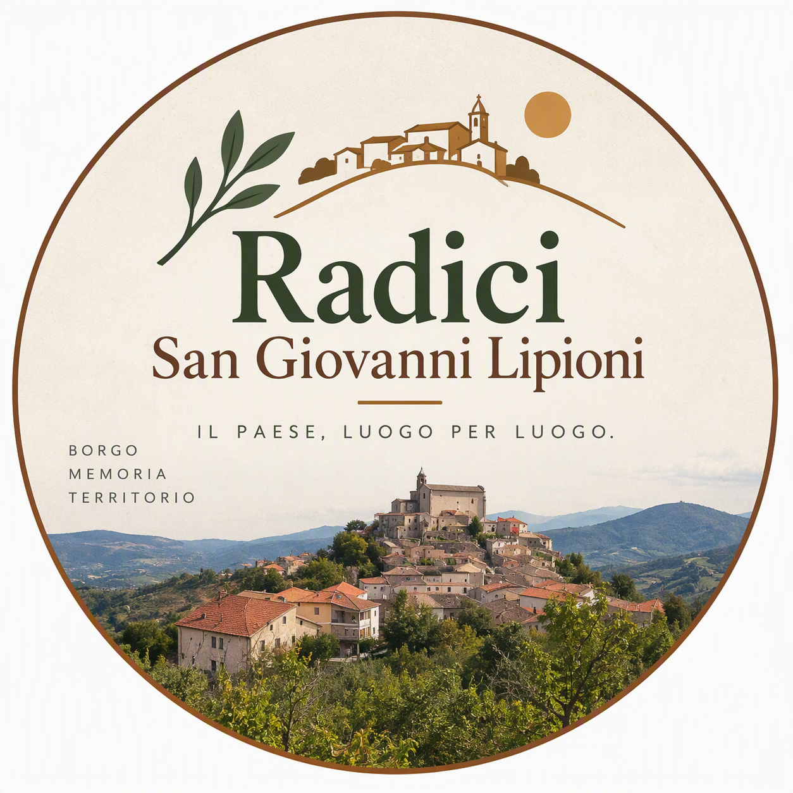
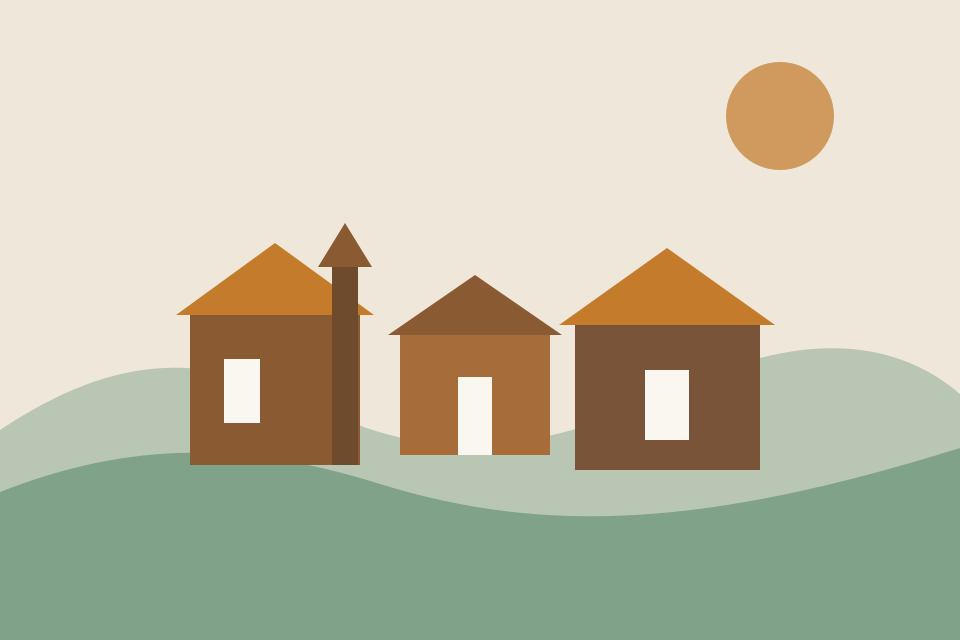
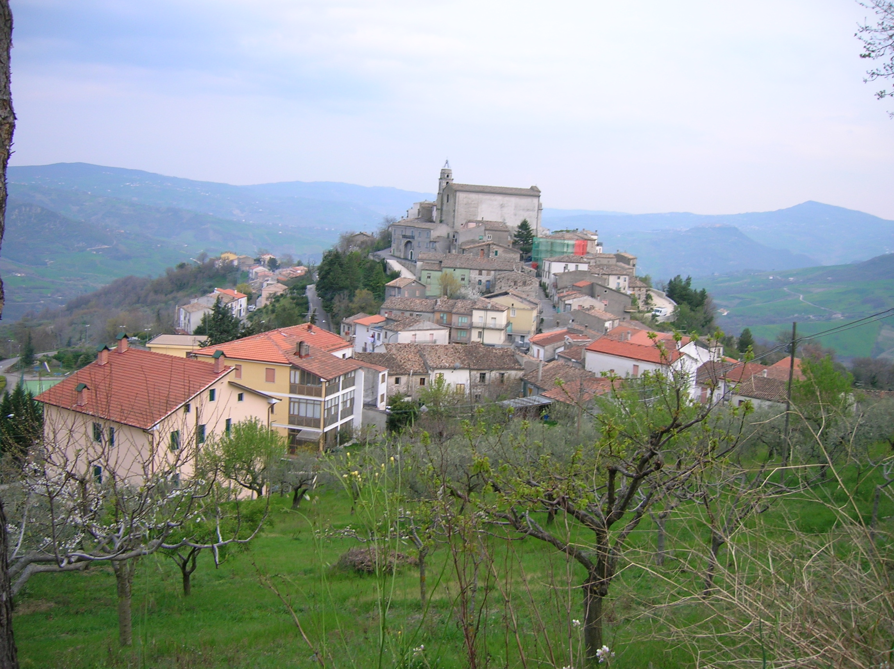

Radici San Giovanni Lipioni
San Giovanni Lipioni,
luogo per luogo.
Nasce Radici, un progetto indipendente per osservare, documentare e comprendere i luoghi che formano il paese.
Esplora l'archivio completo sul sito Radici di San Giovanni LipioniRadici San Giovanni Lipioni
Che cos'è Radici?
Un progetto indipendente di documentazione territoriale dedicato ai luoghi di San Giovanni Lipioni.
Un luogo alla volta raccoglieremo fotografie, fonti, mappe e tracce delle trasformazioni del paese.
Radici San Giovanni Lipioni
Che cosa documenteremo?
- 01Chiese e cappelle
- 02Piazze, vie e scalinate
- 03Palazzi ed edifici storici
- 04Fontane, fonti e lavatoi
- 05Paesaggi, sentieri e aree naturali
- 06Dettagli architettonici
- 07Luoghi trasformati o scomparsi
- 08Confronti tra passato e presente
Radici San Giovanni Lipioni
Cosa non racconteremo?
- Cronaca locale
- Eventi e feste
- Attività turistiche
- Storie personali
- Persone riconoscibili
- Informazioni private
Non racconteremo principalmente ciò che succede nel paese. Racconteremo i luoghi che formano il paese.
Radici San Giovanni Lipioni
Come lavoreremo?
- Fotografie attuali e storiche
- Ricerca di fonti e documenti
- Una scheda per ogni luogo
- Verifica delle informazioni
- Distinzione tra fatti, ipotesi e tradizioni
- Aggiornamenti quando emergono nuove fonti

Radici San Giovanni Lipioni
Segnalazioni e contributi
Cerchiamo contributi documentabili che possano aiutarci a ricostruire la storia materiale dei luoghi.
- Fotografie datate
- Cartoline utilizzabili con autorizzazione
- Mappe e documenti
- Nomi locali e denominazioni
- Informazioni sulle trasformazioni
- Fonti che possano confermare un'informazione
Ogni contributo sarà verificato e pubblicato soltanto con autorizzazione.
Archivio completo Esplora l'archivio completo sul sito Radici di San Giovanni Lipioni
Radici San Giovanni Lipioni
Da quale luogo cominciamo?
San Giovanni Lipioni è formato da tanti luoghi, grandi e piccoli. Quale luogo dovremmo documentare per primo?